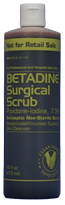
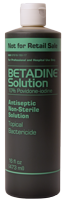
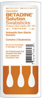
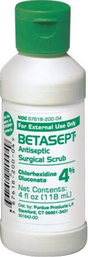

it begins with trust
Professional Products
Betadine®—Trusted by hospitals and doctors worldwide for nearly 5 decades—is available in numerous sizes and formulations.
Betadine® Surgical Scrub
(Povidone-iodine, 7.5%)

Uses
- For preparation of the skin prior to surgery
- Helps to reduce bacteria that potentially can cause skin infection
- For handwashing to reduce bacteria on the skin
- Significantly reduces the number of microorganisms on the hands and forearms prior to surgery or patient care
Additional product information
Betadine® Solution
(Povidone-iodine, 10%)

Uses
Patient pre-operative skin preparation
- For preparation of the skin prior to surgery
- Helps reduce bacteria that potentially can cause skin infection
Additional product information
Betadine® Solution Swabsticks
(Povidone-iodine Solution USP, 10%)
These convenient, disposable, flexible rayon-tipped swabsticks are impregnated with 10% povidone-iodine solution

Uses
- For preparation of the skin prior to surgery
- Helps reduce bacteria that can potentially cause
- Convenient application
Additional product information
Betadine® Solution Swab Aid®
Antiseptic Pads
(Povidone-iodine Solution USP, 10%)
Individually wrapped single-use antiseptic pads, saturated with 10% povidone-iodine solution
Uses
- For preparation of skin prior to surgery
- Helps reduce bacteria that potentially can cause skin infection
Additional product information
BETASEPT® Surgical Scrub
Chlorhexidine gluconate 4% provides antiseptic action with a persistent antimicrobial effect against a range of microorganisms. 2,3

Uses
- Surgical hand scrub: significantly reduces the number of microorganisms on the hands and forearms prior to surgery or patient care
- Healthcare personnel handwash: helps reduce bacteria that potentially can cause disease
- Patient preoperative skin preparation: preparation of the patient's skin prior to surgery
- Skin wound and general skin cleansing
Additional product information
To place an order, contact your medical supply dealer or call our Customer Service Center at 800-877-5666 today.
References:
- Data on File. Glove Juice Test: Efficacy evaluation of two chlorhexidine formulations. Skyland Scientific Services, Inc. July 2, 1985. The Purdue Frederick Company: Stamford, CT.
- Data on File. Glove Juice Test: Efficacy evaluation of two chlorhexidine formulations. Skyland Scientific Services, Inc. July 2, 1985. The Purdue Frederick Company: Stamford, CT.
- Data on File. Determination of antimicrobial activity of three pre-operative prepping products in relation to the normal microbial flora of the skin. Skyland Scientific Services, Inc. March 29, 1989. The Purdue Frederick Company: Stamford, CT.
Betadine® products are for external use only. Single use will reduce the risk of infection from extrinsic contamination with products not labeled single use only. Do not use in the eyes or if you are allergic to povidone-iodine or any other ingredients in this preparation.
Stop use and ask a doctor if irritation, sensitization, or allergic reaction occurs. When using these products, prolonged exposure to wet solution may cause irritation or, rarely, severe skin reactions. In preoperative prepping, avoid ‘pooling’ beneath the patient.
Keep out of reach of children. Please read full product label before use.
Betasept® products are for external use only. Single use will reduce the risk of infection from extrinsic contamination with products not labeled single use only. Do not use if you are allergic to chlorhexidine gluconate or any other ingredient of this product. Betasept® should not come in contact with meninges, be used in the genital area, or as a preoperative skin preparation of the head or face. When using this product, keep out of eyes, ears, and mouth.
Stop use and ask a doctor if irritation, sensitization, or allergic reaction occurs.
Keep out of reach of children. Please read full product label before use.